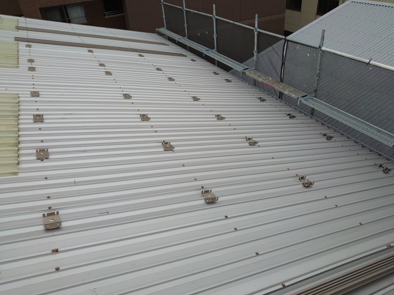
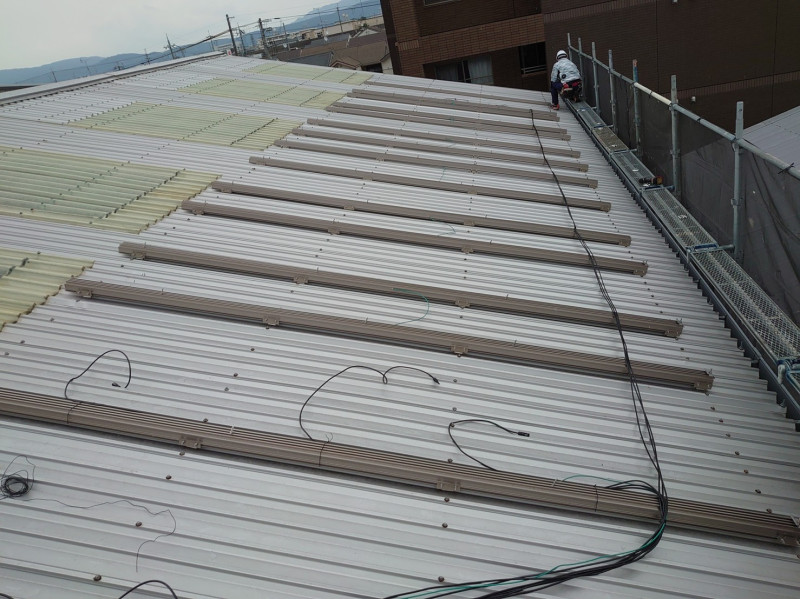
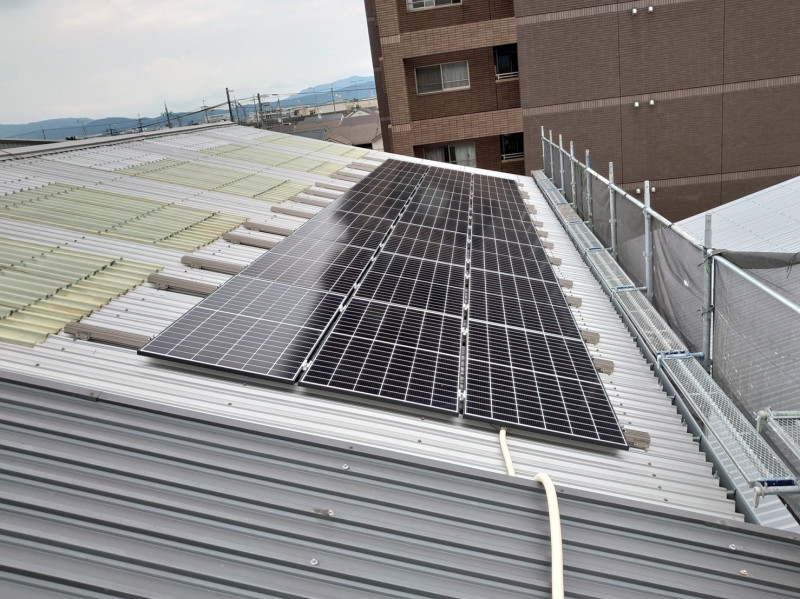

太陽光発電という名前から「一番暑い夏が最も発電する」と思われる方も多いかもしれません。確かに夏は日照時間が長く、日差しも強い季節です。しかし、太陽光パネルにとって気温が高いことが必ずしも有利とは限りません。
必要なのは「暑さ」ではなく「光」
発電量には、日射量・日照時間・天候・パネルの向き・設置角度・周囲の影などが関係します。気温そのものが高ければ高いほど発電するわけではありません。
パネルは高温になると効率が下がることがあります
真夏の屋根は非常に高温になり、太陽光パネルも熱くなります。条件によっては発電効率が低下するため、真夏が必ず年間最大の発電量になるとは限りません。
日差しが十分ありながら、気温が極端に高くない春頃などに発電量が多くなるケースもあります。




設置場所も重要です
近隣の建物や樹木によって影ができると、その時間帯の発電量に影響します。屋根の形状や方角によって設置できる枚数も変わるため、住宅ごとの条件を確認することが大切です。
屋根の状態も確認しましょう
太陽光パネルは屋根に長期間設置する設備です。屋根が劣化した状態で設置すると、数年後の補修時にパネルの取り外しが必要になる可能性があります。
築年数が経過している住宅では、屋根工事と太陽光設備を同時に検討することで、将来的な工事の重複を避けられる場合があります。